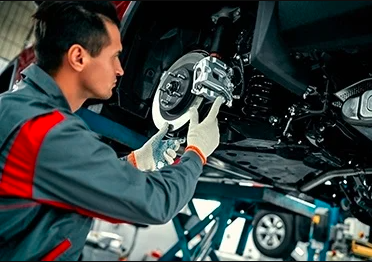
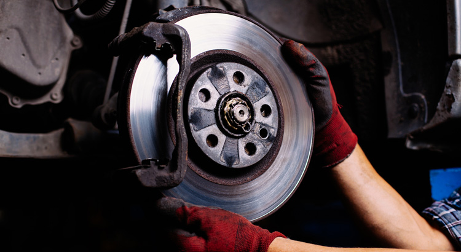

Freinage
un systéme de freinage,c'est quoi?
les freins sont un système de sécurité important de votre voiture qui permettent de ralentir et d'arrêter votre véhicule. Les freins modernes utilisent le frottement des plaquettes de frein contre les disques de frein ou les tambours pour convertir l'énergie cinétique de votre voiture en chaleur. Les freins doivent être entretenus régulièrement pour garantir leur bon fonctionnement et leur efficacité.
Pourquoi prendre soin de votre système de freinage ?
Lorsque vous conduisez, les sollicitations du système de freinage sont très fréquentes, notamment en milieu urbain. Pour préserver des freinages efficaces et de bonnes distances de sécurité, il est primordial de changer les pièces d'usure régulièrement.


